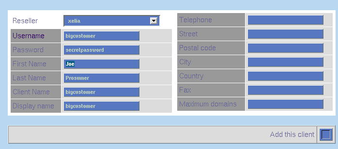

| Adding a Client | ||||||
| To add an client, you must be logged in as a reseller or be an ISPMan administrator with an authority level of at least 20. | ||||||
| Each client is associated with a reseller, who can also manage the
client's domains. This allows the reseller to provide support to the client
if a question arises. If there are no resellers in the system, it is impossible
to add a client.
| ||||||
| To add a client:
 Client Login Information
| ISPMan URL Usually ispman.domain.com (depending on your
setup, they may need to click "Login as Administrator")
| username Whatever you set above.
| password Whatever you set above.
| Remind the user to login as a Client
|
Return to Reseller Guide
| |